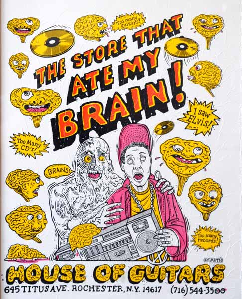
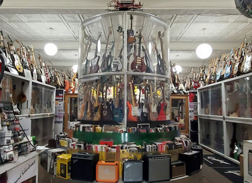
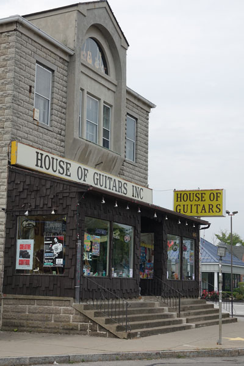
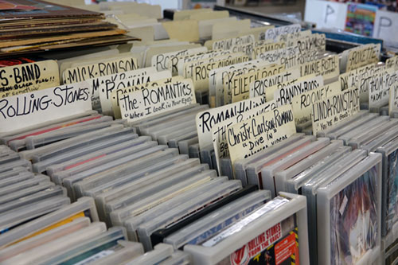
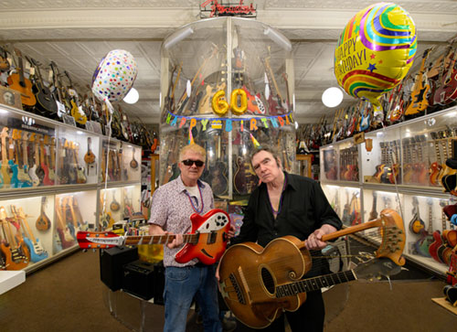

For
the
Rising
Young
Stars
from
Earth
— everything you need to start your band, somewhere in here —
COME DIG THROUGH IT ↓
— everything you need to start your band, somewhere in here —
go ahead, pick one up. throw it. we don't mind.
HOUSE OF GUITARS INC.
645 Titus AveRochester NY 14617
Mon–Sat 10–9
Sun 1–5
RING 585-544-3500
ASK FOR ANYBODY
ASK FOR ANYBODY

Amps · Drums
Mics · Strings and a slew of rare finds only available at HOG. you get the jist.
Mics · Strings and a slew of rare finds only available at HOG. you get the jist.




Vinyl by
the mile CDs · 45s · LPs · WHO KNOWS
the mile CDs · 45s · LPs · WHO KNOWS
Yes, it's in here.
No, we're not sure where.
COME DIG →
No, we're not sure where.
packed floor to ceiling since 1964